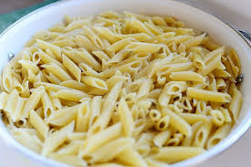

home
Pasta

A simple dish to add carbs to your diet.
Cook Time
Ingredients
- Pasta 1 cups
- Salt 2 pinch
- Splash of Oil
- Water to cover the pasta
Instructions
- Add boiling Water and Salt to medium pot with lid
- Set it to high and wait for it to boil.
- Leave on boil then add the pasta
- Cook until the pasta is al-dented
- Strain the water out
- Add oil to prevent sticking
- Serve